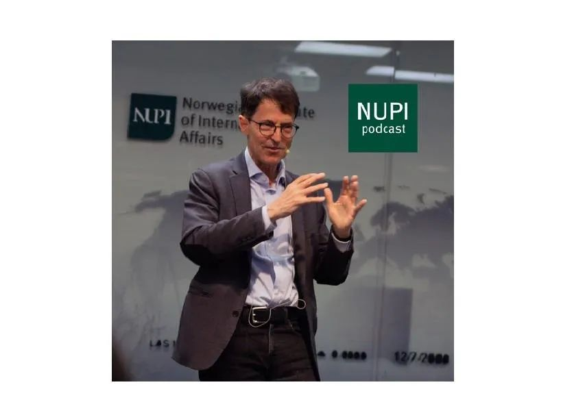
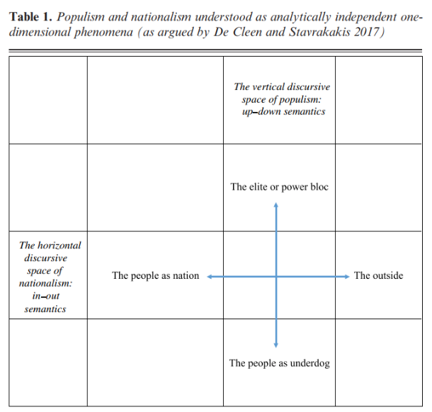
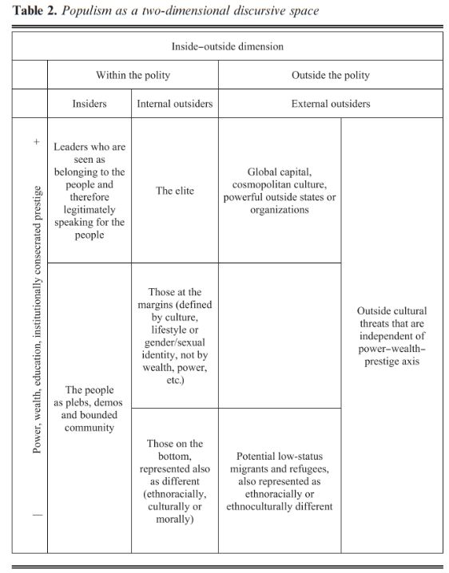

收录于合集 #比较政治学 121个
文献来源： Brubaker, R. (2020). Populism and Nationalism. Nations and Nationalism , 26(1), 44-66.
作者简介： Rogers Brubaker，加州大学洛杉矶分校（UCLA）社会学教授、基金会主席，研究兴趣为比较和历史视野中的移民、公民、族群与民族主义。

研究背景与研究意义
古往今来，很少有社会科学概念能像当代世界的“民粹主义”这么妇孺皆知而又备受争议。人们在民粹主义的概念意涵、经验外延和规范价值上几乎都没有取得共识。民粹主义是一套修辞话语，还是一类真实的政治现象，又或一种深刻的社会结构？民粹主义是民主环境中的必然产物，还是偶发性的病态反应？民粹主义在意识形态光谱的左侧还是右侧？美国优先的“特朗普主义”和反对移民的欧洲政党能否都被归于民粹主义？民粹主义有没有可取之处，又或者真的十恶不赦？对上述问题的争论一直存在，也将长期存在于学术研究与公共舆论之中。
在近期的理论和现实中，民粹主义和民族主义愈发纠缠在一起。而复杂的政治世界也使得这两个概念变得越来越模糊。一种经典的观点认为，民粹主义和民族主义本身就是密不可分的。甚至有学者认为民粹主义就是民族主义的一种，而其核心主张是将人民（the people）和民族(the nation)等同。这种观点可以很好地解释当代欧洲右翼民粹主义政党的兴起，但却难以适用于左翼民粹主义政党（如希腊左翼激进联盟）或混合民粹主义政党（如意大利五星运动）。
另一种观点则将民粹主义和民族主义进行了明确的区分。这些学者认为，民粹主义作用于垂直维度（人民VS.精英），而民族主义则作用于水平维度（我族VS.他者）。而根据这种理解，所谓的欧洲右翼民粹主义政党应当被称为民族主义政党。因为其民粹主义诉求往往没有民族主义诉求显著。

作者则认为这两种观点都有失偏颇：民粹主义和民族主义是两种相互牵连、相互交叉的现象领域，他们既非彼此独立，又不完全重合。因此，作者希望通过文献的梳理和理论的辨析来明确民粹主义和民族主义的关系，进而寻找它们的结合点并重构民粹主义的完整意涵。
两种文献的起源与变迁
无论当代的民粹主义和民族主义有多暧昧，针对这两种现象的研究无疑有着截然不同的起源。
一方面，对于民族主义的学术探讨可以追溯至20世纪初。在两次世界大战之间，大批的历史学家和心理学家都开始讨论民族主义。从20世纪60年代开始，安东尼·史密斯、厄内斯特·盖尔纳、本尼迪克特·安德森、霍伯斯·鲍姆等大家纷纷涌现。而到了二十世纪末，以民族主义为议题的期刊、会议和学术团体已经蔚然成风。
另一方面，大写P的民粹主义（Populism）一开始被视为美国早期农民运动和俄国“民粹派”的专用名词。20世纪50年代后来才出现了小写p的民粹主义（populism）用法。此后，民粹主义的文献开始成倍地增长。而这一概念的复杂和混乱也很早就初现端倪，甚至伦敦政经学院在1967年专门召开了“定义民粹主义”的研讨会。随后民粹主义又进入了区域研究的范式中，并常常被用于解释拉丁美洲的政治现象。
值得注意的是，历史上的民粹主义从未被赋予像民族主义那么崇高的理论地位。在很多理论家眼中，民族主义就是近代历史的载体，几乎所有的政治、经济、社会和文化现象都与之相关。民族主义是属于我们时代的合法性原则，也是一种推动历史的社会经济建构、政治文化认同和共同体理想。与之相对的是，民粹主义往往被视为反应性的、偶发的、病态的、边缘的政治现象，过去最重视民粹主义的学者也只会将其视为民主的影子。
随着各自研究的推进，两种发展趋向使得民族主义和民粹主义开始纠缠起来。首先，有关民族主义和民粹主义的研究都开始背离现代化理论框架。越来越多的学者都将视野从宏观理论转向特定时空中的具体问题，而民族主义和民粹主义都被视为在政治发展中普遍存在而又值得关注的因素。这奠定了民族主义和民粹主义的对话基础。
第二种发展趋向则是文化/话语研究而非结构研究的流行。这使得很多学者开始关注政党、意识形态、选举与投票。在这种范式下，民族主义和民粹主义摆脱了特定的社会- 经济结构，因此具有了更大的普遍性和可比性。
重构复合的民粹主义
民粹主义和民族主义的结合点无疑是“人民”和“民族”。然而这两个概念本身又非常模糊，特别是“人民”一词。在民粹主义的话语体系中，人民有三重含义。作为“普通人”的人民、作为“主权者”的人民和作为“共同体”的人民。其中，作为共同体的人民往往具有或认为自己应当具有道德、文化或政治上的同质性。因此，人民既可以指代政治共同体内部的一部分，也可以指代整体上的政治共同体。而人民主权和国家主权的诉求很有可能是同时出现的，这就使得民粹主义和民族主义产生了交叉。
然而，民粹主义和民族主义的区别又是客观存在的。民粹主义仍然聚焦于共体内部的认同与分配，而民族主义则将共同体置于民族国家的世界体系之中。因此，民族主义有着明显的参照系，而民粹主义则更为复杂。
如下图所示，作者认为，民粹主义本身就有着垂直和水平这两个维度。在垂直维度上，民粹主义所赞扬的人民其实处于社会的中层。他们努力工作、辛勤养家、默默无闻、老实本分。腐败堕落的精英无疑是他们的敌人，但坐吃山空、寄生吸血的真正底层群体也被他们不齿。在水平维度上，作为共同体的人民则面对着更多的敌人：全球金融资本、国际主义文化、他国与异族，还有那些已经侵入共同体的少数群体。也正因如此，民粹主义并不必然反对所有精英，特别是民粹主义本身的领袖。相反，他们被视为人民的真正代言人。此外，值得注意的是，民粹主义在水平维度表现出的排外性并不是其与民族主义合流的结果，而是基于人民这一概念的必然要求。

结语：概念的“净化”之旅
很多学者将民粹主义的模糊之处归咎于其与民族主义的联系，并在此基础上开启了一轮又一轮的概念净化之旅。其中，许多文献都将民粹主义肢解为垂直维度的分裂，从而试图斩断其与民族主义的勾连。
对此，作者指出，民粹主义和民族主义都是对现实现象的描述。而非对韦伯主义的“理想型”的抽象与概括。因此，应当容许并重视民粹主义的复杂性及其和民族主义的关系。社会科学研究离不开概念的运用，而概念应当是明确的，却不一定是纯净的。
编译：陆屹洲 审校：杨端程 编辑：郭静远
【政文观止Poliview】系头条号签约作者